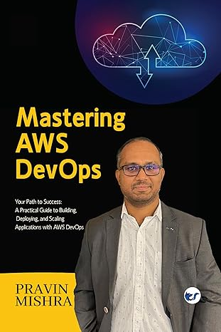
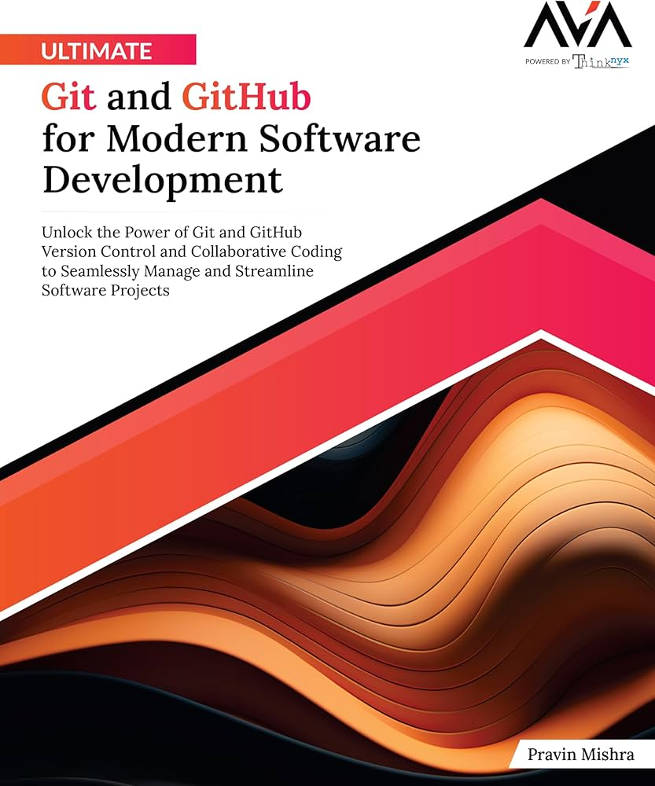

Cloud Computing with AWS
The foundational book that helped me understand AWS from the ground up — written by my course instructor.
View on Amazon →DevOps Engineer from Nellore, Andhra Pradesh — currently upskilling in Agentic AI DevOps with Claude Code. I build cloud infrastructure on AWS using Terraform, automate deployment pipelines, and design safety-first agentic workflows that go beyond traditional CI/CD.
Building and deploying scalable infrastructure on AWS — S3, CloudFront, EC2, IAM, and more.
CI/CD pipelines, Infrastructure as Code with Terraform, Docker, and Kubernetes.
Designing Claude Code workflows with Skills, MCP, and Hooks for safe agentic DevOps automation.
Implementing SAY / DO / LOG hook systems that make AI-driven pipelines safe for production.
A hands-on toolkit built through real projects and deployments
Real deployments. Real infrastructure. Real outcomes.
A fully working end-to-end deployment pipeline where Claude Code scaffolds Terraform, plans and applies AWS infrastructure, and deploys a static site to S3 + CloudFront — all through slash commands. Includes a 3-layer safety hook system (SAY / DO / LOG) and live MCP connections to Terraform and AWS.
Implemented an automated security audit → fix → verify workflow using Claude Code subagents and MCP. The security auditor agent reads Terraform files and identifies misconfigurations. The tf-writer agent uses live Terraform MCP context to apply fixes directly. Proven workflow: found and fixed missing S3 server-side encryption.
Designed and implemented a 3-layer safety system for agentic DevOps workflows. The SAY hook blocks destructive prompts before Claude processes them. The DO hook intercepts dangerous Bash commands right before execution. The LOG hook writes a timestamped audit trail of every command Claude runs.
Ultimate Agentic AI DevOps with Claude Code — by Pravin Mishra
Set up the full DevOps toolchain (AWS CLI, Terraform, Docker, uvx, GitHub, VS Code). Created CLAUDE.md to give Claude project context, architecture, and hard conventions. Tested that Claude respects rules — refused to add React to a no-JS project.
Designed 4 production-grade Skills with correct tool permissions: /scaffold-terraform (write), /tf-plan (read-only), /tf-apply (execute), /deploy (AWS CLI execute). Understood why permissions must match task risk.
Ran the full pipeline twice: scaffold → init → plan → apply → deploy. Static site went live on AWS S3 + CloudFront. Zero manual Terraform written. Ran it a second time and understood every step deeper than the first.
Connected Terraform and AWS MCP servers. Ran audit → fix → verify loop: found missing S3 encryption, fixed it via tf-writer using live MCP context, re-audited — clean. Learned the difference between training data and live data.
Implemented SAY, DO, and LOG hooks. Proved they work: "delete all resources" blocked, terraform destroy blocked, /tf-apply logged. Understood why both prompt and tool guards are needed for true production safety.
Completed — March 2026
A 7-week hands-on course covering CLAUDE.md, Skills, Subagents, MCP, and Hook-based safety systems. Every week had a real deliverable — not just theory, but working deployments and live AWS infrastructure.
The foundational book that helped me understand AWS from the ground up — written by my course instructor.
View on Amazon →
Deep-dive reference for AWS DevOps patterns, pipelines, and real-world deployments. Essential companion to the course.
View on Amazon →
Mastering Git workflows and GitHub collaboration — the foundation of every DevOps pipeline built in this course.
View on Amazon →Building in public — sharing every step of the Agentic AI DevOps journey.
Full agentic pipeline — Skills, hooks, Terraform, MCP config
7-week learning series — all posts public with proof
Deployed via Claude Code agentic pipeline — S3 + CloudFront
Open to DevOps / Cloud Engineering opportunities
Assignments Completed
Live AWS Deployments
Skills Built
Hook Scripts Written
Open to DevOps, Cloud Engineering, and Platform Engineering opportunities. Let's connect.
Nellore, Andhra Pradesh, India
Hands-on experience deploying real AWS infrastructure using Terraform and
agentic AI pipelines. I understand not just how to use the tools, but how to
design safe, repeatable, and scalable workflows around them.
Actively upskilling. Building in public. Ready to contribute from day one.